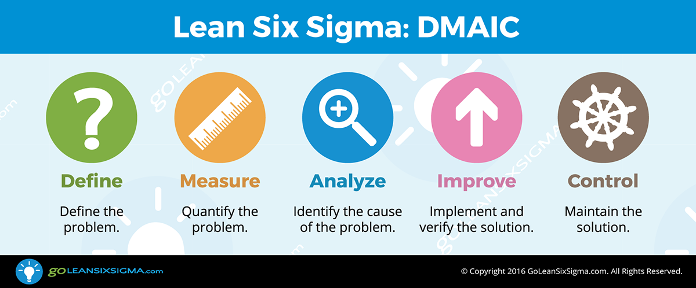

购房流程
综述
购房与6 Sigma等项目交付的质量流程是一样的，也是需要方法论(Methodology)的，是基于数据事实进行决策的过程，你需要
- 对潜在风险进行识别
- 看房过程中持续改进
- 对购买失误进行根因分析
一般来说，交首付前信息量少，而损失低。交首付后判断信息变多，而现在就损失大了。因此购房就是一个从小白到领域专家，并分析风险的学习过程。网上的质量管理文章非常多了，这里就不多讲了，以常见的DMAIC为例。

上面的图虽然看起来很专业，但是正如在项目中没有领域专家6-Sigma就反而是负担一样，上面的流程缺少懂领域业务的“HOW”是无法走下去的，我们接着往下看如何解决。
投入时间
买房需要投入时间精力，搜集信息并做出决策，它取决于你的洞察视野以及社会经验，作为码农整天敲电脑，你的渠道就会很少。因此你需要扩展自己的渠道，才能定义，度量与分析问题。不要担心耽误因此了上班，你看房节约的钱，可能比上班一年还多。
- 你当初高考选择大学与城市，决定了你后期的工作
- 你选择跳槽，决定了你后期发展与时薪
- 你选择的对象，决定了后期的幸福生活
- 你选择买房，决定了后期的居住通勤等生活质量
虽然上面的话有点像中介逼定套路，然而很多人面对这种选择时，却投入很少的时间就做出了不理智的选择。任何有经验的老同事都一定对你教导过，选择比努力更重要，要利用优势为杠杆并全新投入。
H公司的任总曾经说到
对于前沿科学，研发实行先“开一枪”，“让子弹飞一会儿”；看到线索再“打一炮”，只需要小范围研究讨论就能决定；如果攻“城墙口”需要投入“范弗里特弹药量”（意指不计成本地投入庞大的弹药量进行密集轰炸），由管理层集体决策。
这种策略在进行买房调研时也可以参考，当然这里不是让你交学费亏钱，而是依靠的是对项目状况的决策，要“看到线索”后明确目标并投入大量精力来实现。
相比于16，17年买了就能挣钱，现在18年的限购政策，加息，贸易战等因素更加复杂，因此一定需要投入更多的时间去了解房子（这样写起来真有点悲哀，为了房子而忽略了实业工作，可以说是厉害了我的国了👍）
数据源(兼听则明)
与码农通过Github或者StackOverflow不同，买房的信息渠道是分散的，因此你需要整理识别，需要消耗大量的时间去判断并做出结论
- 切忌单打独斗，一定要及时求助他人
- 最推荐找熟人介绍的靠谱中介(比如深圳的exHWer转行做中介，点数低，从相亲到离婚全部一条路搞定)
- 本地论坛(比如武汉的光谷论坛)
- 住建局/规划局发文(验证中介是不是在扯淡)
- 公司论坛/微信群(公司内部员工比较靠谱)
- 社会微信群/小秘圈/微博(一些大V，自己辨别)
看完了各种帖子与讨论后，一定要记下来，记下来，记下来，并形成结构化(比如CSV文件)与非结构化数据(比如某个地段的笔记)！否则就跟看微博一样走马观花，马上就忘了。
可视化
通过数据可视化工具将信息总结为表格，并基于地理位置去做分析。并得出结论
- 可视化工具
- QQ地图街景
- 谷歌Eearh(可以显示网格图，最推荐)
通过上面数据源与可视化两步的过程，你应该就明白了买房的各个关键点，然而现在还是纸上谈兵，关键点因素可能有数十个，你自己没法加权获取到主要因素。
现场看房(DOE)
现场看房也就是所谓的踩盘了，踩盘可以看作一种低成本的DOE方法论，通过观察实地，感受真实配套对自己的影响，总结出自己的关键点加权值，这样你在进行后续买房时对比因素时(比如A区的交通好，而B的商圈好)，可以基于加权进行量化对比，而不是反复主观纠结
买房
此部分就是谈价钱了，后续有专题来详解